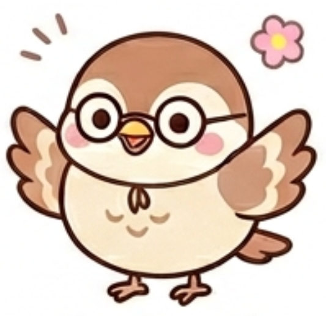

あなたのフレンドタイプは...

GFPD：野次馬スズメ
あなたは、人が集まる賑やかな場所や新しいイベントが大好きで、フットワーク軽くどこにでも現れる非常に社交的な人です。しかし、自分から責任を持って場を仕切ったり、事前の計画を立てたりするような面倒なエネルギーは使いたがらない、本質的には自由気ままで省エネなマイペース派でもあります。
その場にいる時は、熱苦しい感情論とは無縁の、非常にクールで鋭い客観的な視点を持っています。ですが、ただの冷たい傍観者では絶対に終わりません。持ち前の並外れた人間観察眼をユーモアに変換し、誰も思いつかないような斜め上の角度から奇想天外な発言やエッジの効いたボケを放って、一瞬にしてその場の笑いの中心をかっさらっていく、スマートで圧倒的に面白いタイプです。
友達から見たあなたは、ズバリ「どこにでもひょっこり現れて、一番美味しいところを笑いで持っていく天才的なお調子者」です。
楽しい集まりやイベント事には必ずと言っていいほど顔を出しますが、幹事をやったりお店を選んだりする泥臭い役回りは「誰かよろしく〜」と綺麗にスルーします。しかし、いざ飲み会や雑談が始まると、あなたの独壇場が始まります。
周囲の人間模様やその場の状況を冷徹なまでに冷静に観察しており、みんなが普通に見過ごすような小さな違和感や、他人のちょっとした言動を拾い上げて、最高にキレのある笑い話に昇華させて披露します。
友達の間では「スズメの話はマジで予想がつかなくて死ぬほど面白いｗ」「いつも飄々としてるのに、喋ると笑いの中心を全部持っていく」と、その卓越したトーク力と奇想天外なセンスが大絶賛されています。感情に流されないドライな雰囲気がありつつも、絶対に場を退屈させないため、グループのエンタメ担当・ムードメーカーとして欠かせない存在になっています。
ありきたりな日常の風景や何気ない会話を、独自の客観的なフィルターを通して強烈なユーモアに変えるため、あなたがいるだけで場が爆発的な笑いに包まれます。
人がいる場所が基本的に好きなので誘われればひょいひょいと現れ、どんなメンバーの集まりであってもその場の空気を掴んで一瞬で笑いの中心に溶け込むことができます。
物事を感傷的に捉えず、常に一歩引いたドライなスタンスを崩さないため、人間関係のゴシップや愚痴の場であっても、それをカラッとした笑い話に変えて空気を明るくしてくれます。
あなたの客観的で面白いボケセンスは最高ですが、時にそれが「他人の真剣な話をただのエンタメ（笑いのネタ）として消費する、少し冷情で無責任な人」と思われてしまうことがあります。友達が本気で傷ついていたり、真面目な相談をしていたりするときに、全体の流れを冷徹に分析するあまり、「それって要するにこういうことでしょｗ」と面白おかしくネタ化してしまったり、どこか人ごとのように茶化してしまったりすると、相手は「この人は私の痛みを笑い話にしたいだけなんだ」と深く傷つき、心を閉ざしてしまいます。